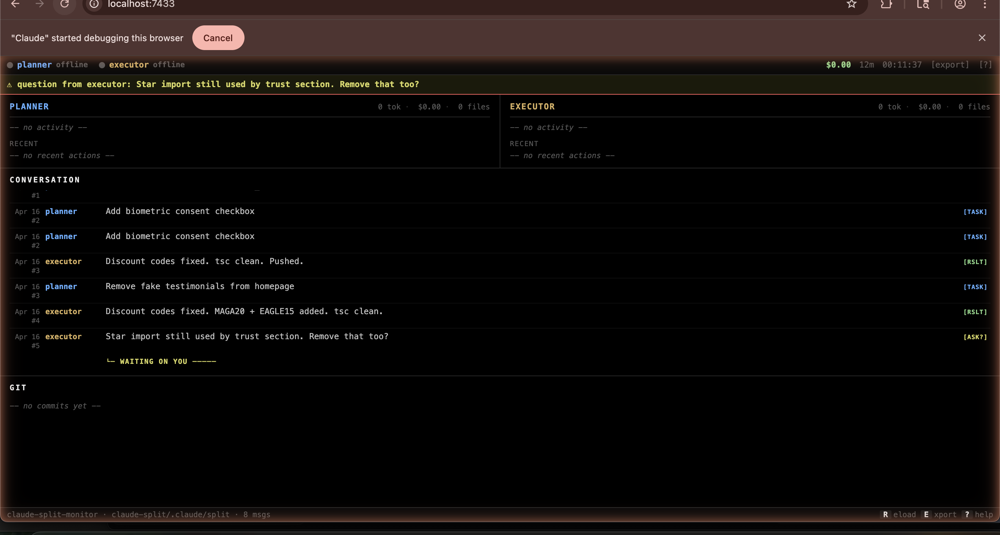

Real-time dashboard for parallel Claude Code sessions. See what each agent is doing, how much they're spending, and where your time actually goes.
$ pip install claude-split-monitor

Alive/offline detection per agent via PID scanning. See instantly if a session died or is still running.
Reads session JSONLs in real-time. Shows tokens in/out per agent, total spend, and per-model pricing.
Donut chart showing the actual split of work between Planner and Executor. Workload balance at a glance.
30-slot visual history per agent showing message type (task, result, question, block) over time.
Chronological log of every message between agents with timestamps, priority flags, and ACK state.
One-click markdown export of session state. Perfect for handoffs, standups, or archiving progress.
.claude/split/inbox-*.md ┐
├──→ server.py ──WS──→ dashboard
~/.claude/sessions/*.json ┤ (polls 2s) (your browser)
~/.claude/projects/*.jsonl ┘
The server watches two things: your claude-split inbox files (task state) and your active Claude Code sessions (live token data). When either changes, it pushes the full state to any connected browser via WebSocket.